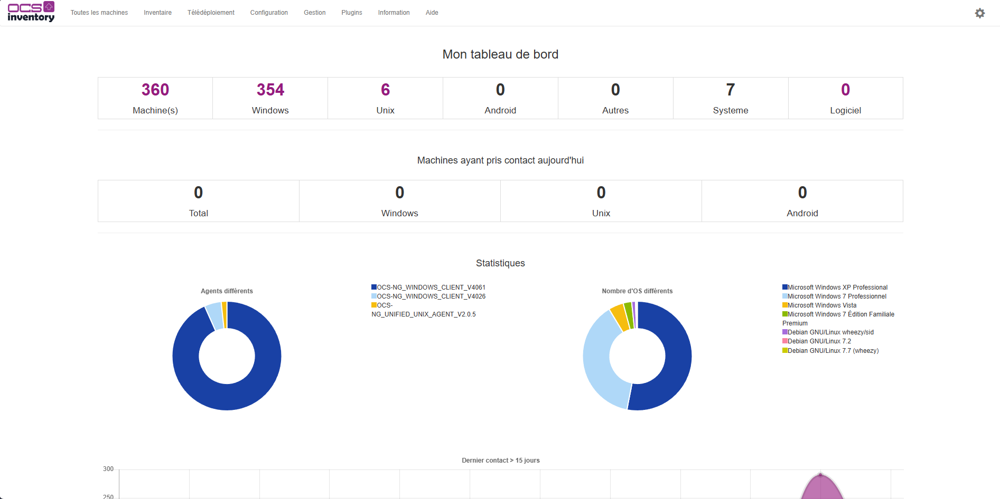
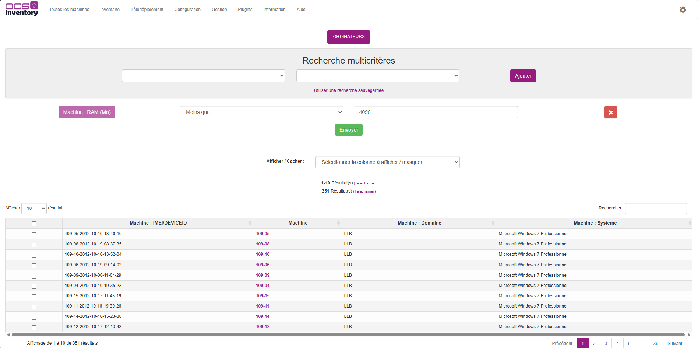
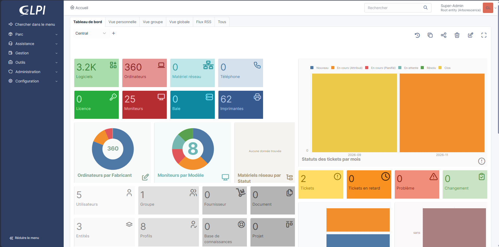
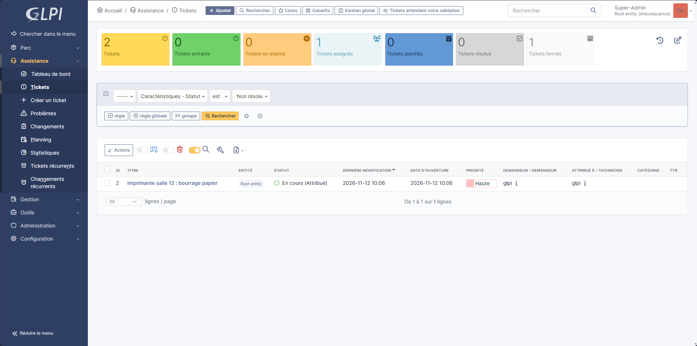

Etudiant en BTS SIO, Option SLAM et Micro Entrepreneur dans l'informatique.
J'ai utilisé OCS Inventory pour recenser un parc informatique de 360 ordinateurs : j'ai créé des groupes pour organiser les machines, puis exporté les résultats en CSV pour les exploiter dans un tableur.


J'ai utilisé GLPI, un logiciel de gestion de parc et de suivi d'incidents. J'ai découvert son organisation avec les entités, les profils et les comptes utilisateurs, et j'ai créé un ticket d'incident, en cours de résolution.


Numéro de téléphone etc...